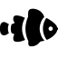
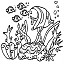
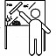

Services

Fish & Supplies
A global importer for the beginner to expert hobbyist. We provide Exotic Fish, Live Corals, and Invertebrates. From the Asian Islands to the Southern Hemisphere, our suppliers send us only the best from the seven seas. We are meticulous in ensuring that our fish are kept in quarantine until we are sure that they are safe to place them for sale. All of our livestock are given the best food and water treatments to strengthen them for your aquariums. We offer these supplies for you to continue their well being.Installation
No matter the size or shape of your aquarium, we will arrive with all of the correct equipment and supplies to install and decorate a brand new tank in your home or office. We will bring the purest salt water, living sand and live rock so that you can purchase your aquarium and fish today and enjoy them tonight. You will not have to wait 3 months for a nitrogen cycle to occur! Call us for details. For a more detailed list of our services, please click on the title of this section.

Aquascapes
Imagine coming home or entering your office with your own private reef or pristine fresh water river. After diving in places like Japan, Indonesia, Malaysia Australia and Hawaii, Ed and his staff bring their expertise to your aquarium to make it as beautiful as the aquascapes seen in the oceans and the rivers What is an aquascape? It is a recreation of an underwater landscape as nature created it.

Maintenance
All Fish Hobbyist enjoy cleaning their aquariums and keeping their fish healthy. However, the size, the location, quantity of fish, corals, and invertebrates, will determine how often it will need a deep cleaning. Whether it's bi-weekly or monthly cleaning, and also depending on your schedule, will also become a factor in preserving the healthy state of your aquarium. E.R.D. offers residential and commercial maintenance services. We will come prepared with everything we will need to ensure that your fish are healthy and the water quality is perfect for them.Custom Aquarium and Installation
If you envision having an aquarium installed in the wall or having a unique one of a kind custom aquarium with custom cabinetry, we are here to make your visions come true. ERD can accommodate you with a range of budgets to create your dream aquarium. We will not cut corners and we will take the necessary steps to ensure that you get what you want. We find that our attention to detail has set us apart from the people.